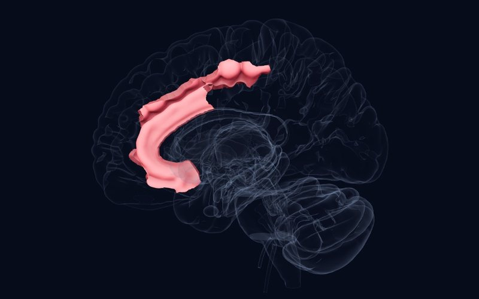

Bülten · Sayı 2 · 16 Ekim 2026
Erken travmadan korku devresine
Bu sayıda erken yaşantının izini beyinden kliniğe ve geri hücreye kadar sürüyoruz: travmanın beklenen yerde değil başka yerde iz bırakması, çocuk TSSB'sinde iki yaygın tedavinin karşılaştırması, insan beyninde duyguların doğrudan uyarılarak haritalanması ve korkunun neden genelleştiğine dair hücresel bir açıklama.
Bu haftanın çalışmaları
ASistematik derleme, meta‑analizTranslational Psychiatry2026
Çocukluk travması psikoz ve bipolar bozuklukta hipokampusta değil, prefrontal kortekste iz bırakıyor
29 çalışma, 3.056 psikoz ya da bipolar bozukluk hastası (ortalama yaş 36,6)
AyrıntılarKapat
 Atlas
Atlas
Bulgu
Glukokortikoid reseptörünce zengin hipokampus ve amigdalanın çocukluk travmasından en çok etkilenen bölgeler olduğu uzun süredir varsayılıyor. Bu derleme psikoz ve bipolar bozuklukta çocukluk travması ile gri madde hacmini inceleyen 29 çalışmayı (3.056 hasta) topladı. Çalışmaların çoğu travma ile gri madde arasında olumsuz bir ilişki bildirdi, ama bu ilişki en tutarlı biçimde prefrontal bölgelerde görüldü. Hipokampus (5 çalışma) ve amigdala (4 çalışma) için yapılan meta-analizlerde anlamlı bir ilişki bulunmadı.
Neden önemli
"Travma hipokampusu küçültür" anlatısı bu hasta gruplarında tutarlı bir destek bulmuyor; travmanın etkisi daha çok kortikal düzeyde yakalanıyor olabilir. Atlasta prefrontal korteksin uzun süren olgunlaşması bu duyarlılığı düşündürüyor.
Sınırlılık
Erişkin hastalar, çalışmalar arasında yüksek heterojenlik ve meta-analize giren az sayıda çalışma; sonuç çocuklara doğrudan genellenemez.
Petrova T, Tennfjord AØ, Cavero D, et al. Revisiting the link between childhood adversity and stress-sensitive brain regions in psychosis and bipolar disorder: a systematic review and meta-analysis. Translational Psychiatry. 2026. doi:10.1038/s41398-026-04457-w
ASistematik derleme, meta‑analizEuropean Journal of Psychotraumatology2026
Çocuk ve ergen TSSB'sinde BDT ile EMDR arasında belirgin fark yok
5 randomize çalışma, 248 çocuk ve ergen (6–18 yaş)
AyrıntılarKapat
 Atlas
Atlas
Bulgu
Bu meta-analiz, travma yaşamış 6–18 yaş arası çocuk ve ergenlerde bilişsel davranışçı terapiyi (BDT) EMDR ile doğrudan karşılaştıran beş randomize çalışmayı (248 katılımcı) birleştirdi. TSSB belirtilerinde iki tedavi arasında anlamlı fark yoktu; bu sonuç hem çocuğun (SMD 0,18) hem ebeveynin bildiriminde (SMD 0,23) aynıydı. Kaygı belirtilerinde de anlamlı fark bulunmadı. Depresif belirtiler ise BDT grubunda EMDR grubuna göre daha yüksekti (SMD 0,44).
Neden önemli
Çocuk TSSB'sinde iki tedavinin de yerini koruduğunu ve seçimde çocuğun eşlik eden belirtilerinin, ailenin tercihinin ve ulaşılabilirliğin belirleyici olabileceğini düşündürüyor.
Sınırlılık
Çalışma sayısı çok az ve izlem kısa (yalnızca birinde 12 aylık izlem var); depresyondaki fark ihtiyatla yorumlanmalı.
Meoon I, Khlaisuk A, Nansunanon S, et al. Systematic review and meta-analysis: the effectiveness of cognitive behavioral therapy and eye movement desensitization and reprocessing in children and adolescents. European Journal of Psychotraumatology. 2026. doi:10.1080/20008066.2026.2731855
BSistematik derlemeNeuroImage2026
İnsan beyninde duygular doğrudan uyarılınca: olumsuzlar şakak lobunun içinden, olumlular singulattan
34 yayın, 2.434 epilepsi hastası, 14.492 uyarım
AyrıntılarKapat

Atlas
Bulgu
Epilepsi cerrahisi öncesinde beyne yerleştirilen derin elektrotlarla (SEEG) yapılan uyarımlar, duygunun insan beynindeki karşılığını doğrudan sınamanın ender yollarından biri. Bu derleme 2.434 hastada yapılan 14.492 uyarımı topladı; uyarımların yalnızca %3'ü öznel bir duygu uyandırdı ve bu duyguların %78'i olumsuzdu. Olumsuz duygular çoğunlukla temporomezial ve temporobazal bölgelerden, olumlu duygular ise beklenenden sık olarak singulat-frontal ve subkortikal bölgelerden geldi. İnsulada belirgin bir yön yoktu, yarıküreler arasında da anlamlı fark bulunmadı.
Neden önemli
Hayvan çalışmalarından ve görüntülemeden çıkarılan duygu haritalarını insanda nedensel olarak sınayan bir veri. Atlasta amigdala ve ön singulat korteksin farklı duygusal yönlerle ilişkisi bu bulgularla izlenebilir.
Sınırlılık
Hastalar epilepsili ve uyarım yerleri klinik gereksinime göre seçilmiş; çalışmalar arasında uyarım ayarları farklı.
Arrighi L, Bartolomei F, Pizzo F. Intracerebral stimulation inducing emotions in SEEG: a systematic review. NeuroImage. 2026. doi:10.1016/j.neuroimage.2026.122288
CHayvan çalışmasıNeuropsychopharmacology2026
Korkunun yayılmasını amigdaladaki ketleyici bir fren sınırlıyor
Lee H ve ark.
AyrıntılarKapat
 Atlas
Atlas
Bulgu
Tehdit işaretini zararsız uyarandan ayırabilmek uyumsal bir beceri; bu ayrımın neden kişiden kişiye değiştiği az biliniyor. Farelerde işitsel korku koşullanmasından sonra lateral amigdalada parvalbumin içeren ara nöronların korku engram nöronlarına uyguladığı ketlenme güçlendi; bunu engram nöronlarında artan α1 alt birimli (Gabra1) GABA-A reseptörleri sağlıyordu. Bu ketlenme bozulduğunda hayvanlar koşullu sese verdikleri tepkiyi korurken yeni seslere de donma tepkisi verdi, yani korku genelleşti. ICER adlı bir gen baskılayıcısı Gabra1 ifadesini azaltarak bu ketleyici plastisiteyi sınırlıyor ve genellemeyi kolaylaştırıyordu.
Neden önemli
TSSB'de korkunun özgün travma işaretinden benzer, zararsız uyaranlara yayılmasına hücresel düzeyde bir açıklama ve olası bir tedavi hedefi öneriyor. Kliniğimizde "her şey tetikliyor" yakınmasının biyolojik bir karşılığı olabilir.
Sınırlılık
Farelerde yapılmış bir çalışma; insanda aynı mekanizmanın işlediği henüz gösterilmedi.
Lee H, Lee S, Yoo T, et al. ICER-Controlled inhibitory plasticity of amygdala engram neurons regulates fear memory precision. Neuropsychopharmacology. 2026. doi:10.1038/s41386-026-02568-y
Haftanın yapısı

Beyin Sapı
Medulla Oblongata
Yaşamsal merkezler: solunum ritmi, kalp ve kan basıncı, yutma ve kusma; beyin ile omurilik arasındaki son geçit.
Okura soru
Travmanın beyinde beklediğimiz yerde iz bırakmadığını gösteren bir bulgu, hastalarımıza travmanın etkisini anlatırken kullandığımız dili değiştirmeli mi?
Yanıtınızı e-postayla gönderebilirsiniz:
[email protected]Kaynaklar
- Petrova T, Tennfjord AØ, Cavero D, et al. Revisiting the link between childhood adversity and stress-sensitive brain regions in psychosis and bipolar disorder: a systematic review and meta-analysis. Translational Psychiatry. 2026. doi:10.1038/s41398-026-04457-w
- Meoon I, Khlaisuk A, Nansunanon S, et al. Systematic review and meta-analysis: the effectiveness of cognitive behavioral therapy and eye movement desensitization and reprocessing in children and adolescents. European Journal of Psychotraumatology. 2026. doi:10.1080/20008066.2026.2731855
- Arrighi L, Bartolomei F, Pizzo F. Intracerebral stimulation inducing emotions in SEEG: a systematic review. NeuroImage. 2026. doi:10.1016/j.neuroimage.2026.122288
- Lee H, Lee S, Yoo T, et al. ICER-Controlled inhibitory plasticity of amygdala engram neurons regulates fear memory precision. Neuropsychopharmacology. 2026. doi:10.1038/s41386-026-02568-y
Bu bülten eğitim amaçlıdır, tıbbi tavsiye değildir; tanı ve tedavi kararları için hekiminize danışın. Özetler çalışmaların özetlerinden ve açık erişimli tam metinlerden kendi cümlelerimizle hazırlanmıştır; ayrıntı ve kesin sonuç için makalenin kendisine bakın.
Kanıt düzeyi (atlastakiyle aynı): A büyük konsorsiyum, meta-analiz ya da düzenleyici karar; B tekrarlanmış çalışmalar ya da klasik vaka; C tek ya da öncü çalışma. Ön baskılar hakemden geçmemiştir.